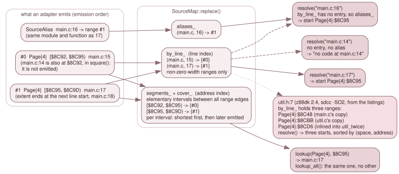

7.2 The source map¶
SourceMap (src/debug/source_map.h, source_map.cpp) is the store for source
positions. It knows no file format: an adapter (7.3) hands it a
vector of ranges, and it builds the two indexes that answer the two questions
the rest of the system asks. Which source line is this address? is a lookup by
(memory, address). Where is this source line? is a resolve by file:line.
It lives in a header with standard includes and debug/mem_space.h, so the
adapters and their tests build without Qt or the emulator.

The same ranges, indexed twice. The example is main.c in the z88dk 2.4
sccz80 fixture: lines 16 and 17 share $8C95, line 14 shares $8C92 with line
15 but belongs to another function, and util.h:7 has three starts.
What an adapter emits¶
struct SourceLocation { std::string file; int line; int column; }; // one-based; column 0 = absent
struct SourceRange { FetchSource space; uint16_t lo; uint32_t hi_excl; SourceLocation location; };
struct SourceAlias { std::string file; int line; size_t range; };
A SourceRange says that the bytes [lo, hi_excl) of one memory space came
from location. The location has no address and no page: where the code is
belongs to the range. hi_excl runs to 0x10000; a range with hi_excl == lo
is zero-width. No adapter in this tree emits one, because every extent rule
yields at least one byte (7.4); the type allows it and the
store handles it: it is counted by size() and kept out of both indexes.
A SourceAlias names a (file, line) that has no bytes of its own and the
index of a range (in the vector given to replace()) it resolves through.
replace(): one transaction¶
SourceMap::replace(ranges, aliases, identity, loaded_file, format, texts, dot)
builds a complete new map and move-assigns it over *this as its last step, so
an observer never sees a half-built store. The order of ranges is emission
order and matters: it is the tie-break below.
- Normalise. A file name has
\turned into/and leading./removed (normalized_file()). Equal(file, line, column)triples share one entry inlocations_. - The line index.
by_line_maps(file, line)to the indices of the non-zero-width ranges of that line, in emission order. An alias whose range index is out of bounds is dropped; the rest go toaliases_. - The address index. Take every edge (
loandhi) of every non-zero-width range, per memory, and sort them. The intervals between consecutive edges are segments; each segment lists, incover_, every range that covers it. The segment's key is(space_key << 20) | lo, wherespace_keyiskind << 16 | index(andCpualways has index 0). - The primary. The ranges of a segment are sorted shortest first and, on a
tie, the one emitted later first (
primary_first). The first is the segment's primary location.
loaded_file is the adapter's absolute, lexically normalised path (built as the local loaded: sld_loader.cpp:328,
z88dk_source_map.cpp:1208), which is also where the search for a source file starts (7.7).
identity, loaded_file, format ("SLD" or "z88dk"; clear() resets it to
"SLD"), texts and dot (SourceMap::dot(): the map is a z88dk dot command's, so
the backend never judges it from memory at a load, 7.6; clear() resets it)
are stored as given. Every const SourceLocation* the class
returns points into locations_ and is valid until the next replace() or
clear(); code that keeps a location copies it. The backend does so before it
calls anything that might load a map.
Looking up an address¶
lookup(space, address) finds the segment by binary search and returns the
primary location, or null when no range of that memory covers the address. It
allocates nothing. Because the key is the memory and the address, code from a
ROM slot or an overlay has a location only if a record names that memory; there
are no unqualified records.
lookup_all(space, address) returns every covering location in the segment's
order: the primary, then ascending length, then later-emitted first. That is the
case of nested ranges: an adapter that emits a long range for a function and a
short one for a statement inside it gets both, the statement first.
SourceMap::same_position(a, b) compares file, line and column, since one
statement can emit several ranges. The source steps use it (7.5).
Resolving a line¶
resolve("file:line") splits at the last :. The text before it is the file,
the rest must be a decimal line number of at least 1; otherwise the result is
empty with no error. The file is matched in two steps: an exact match against
the files of the map, else the unique file whose path ends in "/" + text, a
suffix on a component boundary. Two candidates make it ambiguous and the
result is empty. A file that is not in the map is empty too, so a typo is
silent at this level; the caller turns an empty result into its own message.
For a known file:
- The starts are the line's entries. Every non-zero-width range of the line
is a start at
(space, lo), except a continuation: a range that begins exactly where another range of the same line in the same memory ends. A line that the compiler emitted as two adjacent ranges has one place to put a breakpoint, not two. The starts are sorted by(space, address)and unique. - An alias answers only when there are no starts. The line's alias, if any, gives the start of the range it points at.
- No code. With neither,
erroris"no code at <expression>". That text appears only for a file the map names, which is how a caller tells "this line has no code" from "this file is unknown".
file_ranges(file) is the reverse listing for one file, with the path exactly
as the map holds it (SourceLocation::file, no suffix matching): every
non-zero-width range as {line, space, lo, hi_excl}, ordered by line. Coverage
uses it (7.1).
Embedded texts¶
SourceText { origin, lines } is the text of a source file the toolchain did
not keep: lines[i] is line i + 1, empty where the listing shows nothing, and
origin names the listing it came from. The only producer is the z88dk listing
adapter, which keeps the text of z88dk's generated start-up code (the .m4
files) from prog.lis (7.4.4). embedded_text(file)
looks up the exact normalised name. Every replace() drops the previous
texts, since they came with the previous map.
The C variable store¶
A z88dk map also carries the program's C variables. The adapter reads the
__CDBINFO__ records into a VariableStore and hands it to replace(), which
keeps it like the embedded texts: variables() returns that one shared,
immutable object, a copy of the map shares it, and clear() and every replace()
without one drop it. What it holds, and how it is joined to the map's symbols, is
7.9.
Program identity¶
A map can carry a statement of what the program's bytes looked like when it was
built, so a map for another build is not trusted. SourceProgramIdentity has
two forms, either or both:
- A hash (
sha256,org,size): the SHA-256 ofsizebytes of logical memory fromorg, as they were right after the load. This is the SLD form (7.4.1).sha_matches()refusessize > 0x10000 - org. - Byte checks (
bytes, a list ofSourceByteCheck { space, lo, bytes }): bytes as they must read from one named memory atlo,lo + 1, and so on. This is the z88dk form, built from the section binaries beside the map (7.4.3).
has_identity() is true when either is present. verify_program(read,
read_space) returns nullopt when there is no identity, otherwise whether it
all still matches: the hash through read (logical memory), then each byte
check through read_space for its own memory. A missing read_space, an
unreadable byte or a different byte fails the whole check.
The backend supplies the two readers in Debugger::Impl::verify_identity()
(debugger_source.cpp). The logical reader is Mmu::peek(). The space reader
is Debugger::peek(Page{n}, addr & 0x1FFF) and accepts only Page: a byte
check in any other memory reads nothing and so fails. It reads through
Debugger::peek, not through the CPU's view, so a page is read whatever the MMU
has mapped over it, and a debugger read touches no watchpoint and no latch.
Units and spans, for programs that are not in memory yet¶
A tape's program is not in memory when its map is attached. verify_spans()
splits the identity into units, the things that can be judged separately:
one per memory a byte check lies in, and, for the SLD hash (which hashes logical
memory as one block), the single unit MemSpace::cpu(). A VerifySpan is the
code the CPU is about to run, [lo, hi_excl) of space, which triggers the
judgement of its unit; spans of one unit and space that touch or overlap are
merged, and the list is empty for a map with no identity. For the hash form
there is one span per non-zero-width range. verify_unit(unit, read, read_space)
judges one unit: the hash for Cpu, the byte checks of that memory otherwise,
and nullopt if the map has nothing to check there. 7.6 shows how
the backend uses them.